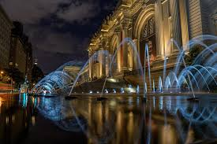

Explore

Mission Statement
Monomuse is an established museum that highlights the intersection between art, technology, and people. We are committed to our mission on sharing the art of progress and serving as a model for the next generation's innovation.
History
Monomuse was founded on November 10th, 2006 and has been an invaluable asset in the community, being a pillar in education, community service, and birthday parties. We look forward to sustaining this level of excellence and community engagement and hope you come pay us a visit.
Milestones
- 2023: Monomuse expands and doubles in size to include breathtaking art exhibits and auditoriums for groundbreaking presentations and performances.
- 2016: Monomuse celebrates 10 years of operations with Bill Nye as a guest speaker
- 2012: Monomuse wins the "Best Museum for Technology" award with a powerful arrangement of technological displays
- 2006: Monomuse welcomes hundreds of people in its opening with an inaugural exhibit on penguins